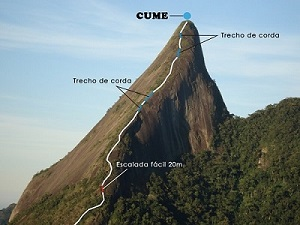
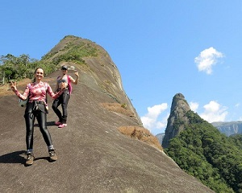
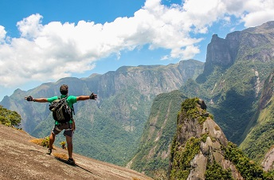

Escalavrado

Das “vias clássicas de escalada” na Serra dos Órgãos, o Escalavrado, com 1.420 metros de altitude, é a
montanha tecnicamente menos exigente para os praticantes do esporte.
Possui uma trilha semi-pesada e grande parte da sua trilha é exposta. A escalaminhada é feita pela crista
da
rocha, por isso os equipamentos de escalada são obrigatórios para que você chegue com segurança ao cume
do
Escalavrado.
O primeiro trecho da trilha do Escalavrado já começa por um trepa-pedra meio escorregadia, que é o fluxo
da
água quando chove, então sempre tem um limo nas pedras, etc. Este trecho embora seja fácil, requer muita
atenção e em alguns casos vale a pena até o guia subir na frente e fixar uma corda (como nós da
Teresópolis Adventure
fazemos) apenas para ajudar no apoio e equilíbrio.
O segundo trecho segue por uma trilha sempre íngreme e passando por lances que são necessários o uso das
mãos, como um “trepa-mato”, “trepa-pedra” e “trepa-arvore” no qual esses obstáculos naturais fazem da
trilha
algo muito divertido e de superação!

O terceiro trecho é bem delicado! Se estiver seco não é difícil, mas requer muita atenção pois uma queda
nesta parte pode gerar um tombo em uma rampa de até 40 metros de altura. A rocha faz uma espécia de
canaleta
natural com alguns veios de cristais onde os participantes sobem pisando e se apoiando. Quando está
molhado,
o que é muito comum, com certeza se torna bem mais delicado e perigoso. Por isso nós sempre aconselhamos
no
mínimo se fixar uma corda e fazer um “corrimão” para ajudar no equilíbrio e mesmo assim é necessário ter
muita atenção.
O “quarto” trecho na verdade é uma sequência de diversos trechos mixtos de trilha íngreme, com rampa de
pedra, trepa-pedra e trepa-mato.
Nesses diversos trechos é necessário usar as mãos e alguns deles são escorregadios e com lances
expostos.
Para facilitar e dar mais segurança para os participantes é necessário colocar cordas fixas em
prendendo-a
em árvores, grampos e bico e pedra.
É necessário ter paciência e muita atenção nesses trechos, pois é normal já começar o cansaço e também a
exposição do sol, que normalmente suga muita energia e aumenta o cansaço.
O quinto trecho são as rampas de pedra, onde é necessário sempre caminhar o mais em pé que puder.
Extintivamente as pessoas tendem a projetar o corpo para frente, só que quanto mais se faz isso, mais se
escorrega. Por isso é importante que o guia seja também instrutor de escalada, pois só os escaladores
conhecem as técnicas de aderência, caminhar ou escalar em rampas e rochas lisas.
Todo este trecho é sensacional para dar uma paradinha e se apreciar a paisagem, pois possibilita uma
visão
espetacular de quase 360º.

O sexto trecho é a primeira aresta. Ao todo existem duas.
Essa primeira aresta é uma parte muito delicada e perigosa da trilha, pois é a aresta mais estreita com
apenas 2 metros de largura e precipício em ambos os lados. Quando a aresta está sequinha é mais fácil de
passar, mas quando ela está úmida é bem delicada e escorregadia, até mesmo para o guia subir com
sapatilha
de escalada para prender a corda.
É fundamental ter uma corda fixa para que os participantes mantenham total equilíbrio e subam em pé
corretamente. De preferência presos a ela.
Sétimo trecho é a outra aresta que existe no Escalavrado, na verdade ela se encontra logo em seguida da
primeira. Apenas uns 50 metros de distância.
Todo o procedimento para subi-la é similar como foi na primeira aresta, a diferença é que esta é mais
comprida e larga, o que na verdade da um certo conforto psicológico, pois ela possui uns 5 metros de
largura
para se caminhar confortavelmente, principalmente com cordas fixas igual foi na segunda.
Quem souber bater algumas fotos de ângulos estratégicos, principalmente com a GoPro, da para ter uns
efeitos
como se a aresta fosse absurdamente alta, íngreme e exposta.
É imprescindível que você assine na entrada do parque o Termo de Conhecimento de Riscos e Normas e dê
baixa
na sua saída na portaria do Parque Nacional da Serra dos Órgãos. A entrada da trilha é feita pela
estrada,
na subida da Serra de Teresópolis.
Embarque nessa aventura!